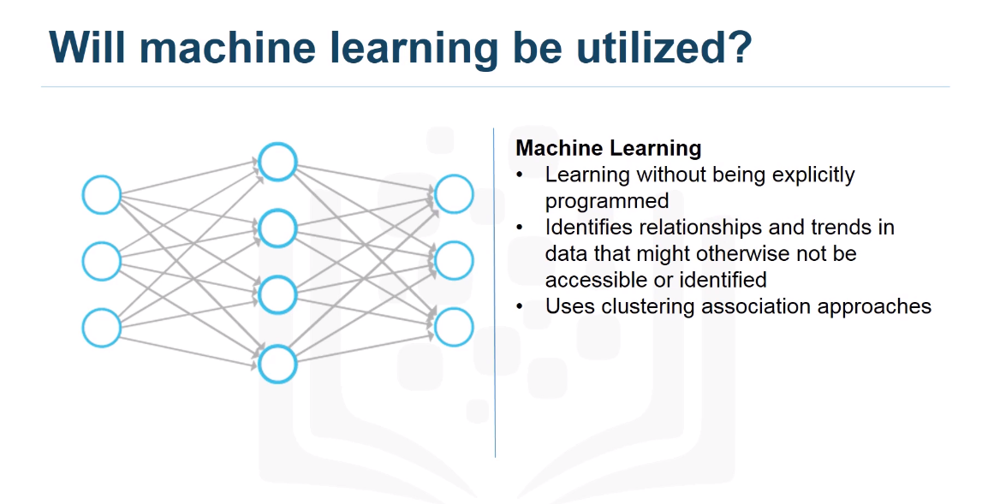
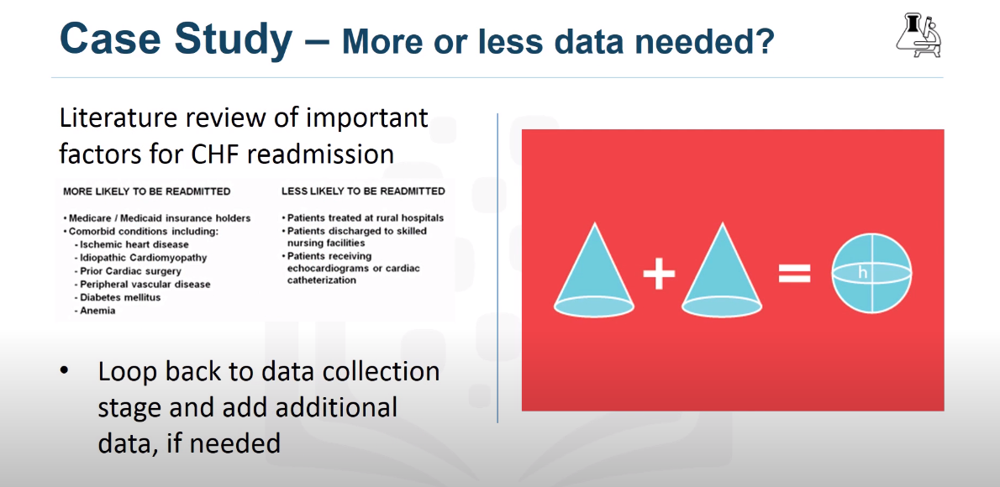

Defining Data Science
What is Data Science?
Data Science is a field of study where you use a lot of data and ask yourself a set of questions about that data, so you start making some hypoteshis and assumptions, then with a set of tools like models, algorithms you can start dig into your data verifying if your assumptions were correct or not.
There are many paths to data science, since the term is some new, because it is started to be used on later 2010, before that people just call it statistics, we can start a data science carreer no matter what our technical background is or hard background we got in the past , everything is related with data. But the real thing is, what are you going to do with the data if you are curious and start questioning about the data you got, you are in the right way, because being in that position is where you start to know more your data and star sharpening your hard skills in data-science.
A good advice to start with yout data-science career is to be curious, argumentative and judgemental. Also you must be able to tell a good story from your data, you need to tell everybody what you found, if you can not tell a story with your data, all the discoverys you can have made, it will be buried, no one will know everything you found ant that is a sad ending.
What is the cloud?
Cloud is a godsend tool to data-scientis because we are allowued to do more stuff with the data, not only for our purposes but for sharing that data with a lot of people of differents places in th world we can work on the same data without being in the same place or even in the same computer or machine. Also with cloud we are able to deploy some algorithms and models with large datasets that in other cases we can not even start because of terms in speed, storage, etc. So cloud is a very good tool for us in those aspects.
What do data science people do?
A day in the life of a data science person
We can start analyzing our data and be sure that our dataset is complete and maybe we can not find our solution in our data, but not always the solution would be in front of our eyes, maybe we need to watch other sides and think out of the box to try to improve our assumptions and then make new hypoteshis and models that try to solve our problem.
Data Science tools and technology
As data scientist we got a lot of tools we can use to analyze our data, some of them are more fancy than others, some of them help in a better way thant others, but at the end of the day, they are just tool, you are the master, you are the person who choose which tools is the best for each situations, and we have a lot of tools, for example, Linear Regression, polynomial regression, data visualization, machine learning algorithms, aritificial neural network, k-nearest neighbor, etc.
Data Science in Bussines
How should companies get started in Data Science
I think the most importat thing when a company start to solve a problem with data science are the data, the data is the most important thing before any algorithm or data science approach, without data and data collected in a meaningful way we can not do much, because it exist a say thay says, Garbage In Garbage Out, if the data the company collected is not the best or bias, the analysis we can make with that data is going to be also byas because we try to build a model with the data.
Recruiting for data science
When companies start to recruiting employees as Data-Scientist they are focused more on the soft-skills than the hard-skills because hard-skills could be teached and learn by the participant, but soft skills like curiosity, sense of humour, storytelling are things you can not teach them, because that are inner qualities each person have, so in finally a company is hiring people that have social skills develop in a way they can relate something more than techinal things with the data they gave them.
The ultimate purpose of analytics is to communicate findings to the concerned who might use these insights to formulate policy or strategy.The data scientist should then use the insights to build the narrative to communicate the findings.
Use Cases for Data Science
Applications of Data Science
Data Science has applications nearly in avery aspect of the life that is because we can collect data for any aspect we can think, but there are some technologies that are new which are driving data science to new horizons, that is the case for augmented reality, medical health, retail, finance and other fields where the need to be the best brings with it the ability to keep getting better and better over the time. But we need to be aware of our models, no matter what or how accurate our model is we can not rely 100% in those models, we oftenly have false positives, cases where the prediction does not work at all. An we need to be also aware of that because at the same time we do thinkgs correct, there going to be cases when things does not work, and that´s ok, because models are not predicting the future, we are trying to insight what is more probable in the future based on past data.

Final Reading First Course
Establishing Data Mining Goals
The first step in data mining is to set up goals for the exercise. We must identify the key question that need to be answered. Also we need to determine the level of accuracy and usefulness of the results obtained from data mining.
Selecting Data
The ouput of a data mining largely depends upon the quality of data being used.At times data are ready availabe for further processing. On the other hand, data may not be readily available for data mining . In such cases you must identify other resources of data or even plan new data collection initiatives. Therefore, identifying the right kind of data needed for data mining that could answer the question at reasonable costs is critical.
Preprocessing Data
Often raw data are messy, containing erroneous or irrelevant data. In addition, even with relevant data, information is sometimes missing. In the preprocessing stage, you identify the irrelevant attributes of data and expunge such attributes from further considerations. At the same time identifying the erroneuos aspects of the data and flagging them as such is necessary. Lastly, you must develop a formal method of dealing with missing data and determine wheter the data are missing randomly and systematically.
If the data were missing randomly, a simple set of solutions would suffice. However , when data are missing in a systematic way, you must determine the impact of missig data on the results.
Transforming Data
The next step, is to determine the appropiate format in which data must be stored. An important consideration in data mining is to reduce the number of attributes needed to explain the phenomena. This may require transforming data. Data reduction algorithms, such as Principal component Analysis, can reduce the number of attributes without a significant loss in information. In addition, variables may need to be transformed to help explain the phenomenon being studied.
Often you need to transform variables from one type to another. It may be prudent to transform the continous variable for income into a categorial variable were each record in the database is identified as low,medium and high-income individual. This could help capture the non-linearities in the underlying behaviours.
Storing Data
The transformed data must be stored in a format that makes it conducive for data mining. The data must be stored in a format that gives unrestricted and immediate read/write privileges to the data scientist. During data mining, new variables are created, which are written back to the original database, which is why the data storage scheme should facilitate efficiently reading from writting to the database. It is also important to store data on server or storage media that keeps the data secure and also prevents the data mining algorithm from unnecesarily searching for pieces of data scattere on different server or storage media. Data safety and privacy should be a prime concern for storing data.
Mining Data
After data is appropriately processed, tranformed and stored, it is subject to data mining. This step covers data analysis methods, including parametric and non-parametric methods, and machine-learning algorithms. A good starting for data mining is data visualization. Multidimensional views of the data using the advanced graphing capabilities of data mining softwares are very helpful in developing a preliminary understanding of the trends hidden in the data set.
Evualating Minin Results
After results have been extracted from data mining, you do a formal evaluation of the results. Formal evaluation could include testing the predictive capabilities of the models on observed data to see how effective and efficient and algorithm have been reproducing data. This is known as in-sample forecast In Addition, the results are shared with the key stakeholders for feedback, which is then incorporated in the later iterations of data mining to improve the process.
Data mining and evaluatin the results become an iterative process such that the analyst use better and improve algorithms to improve the quality of results generated in light of the feedback received from the stakeholders.
Data Science Methodology
From problem to approach
Bussines Understanding
When we face a problem we need to start understading the bussines problem, asking ourself questions like "What is the problem that you are trying to solve" and "How can you use data to answer the question?"
Case Study
Before even to collect data, the goal and objectives needed to be defined.
- Goal: To provide quality care without increasing costs
- Objective: To review the process to identify inefficiencies
After spending time on the things defined above, ibm team prioritized "patient readmissions" as an effective area of review.
After reviewing some records, it was discovered that the patients with congestive heart failure were are top of the readmission list.
Finally four bussines requirements were identified for whatever model would be built.
- Predict CHF readmission outcome(Y or N) for each patient.
- Predict the readmission risk for each patient
- Understand explicitly what combination of events led to the predicted outcome for each patient
- Easy to understand and apply to new patients to predict their readmission risk
Analytic Approach
Once we have defined our bussines requirements, we face the a lot of tools to use, so we can select our analytic approach based on type of questions as below:
Also there are types of questions that could drive our analytical approach for example if we are facing a problem where we need to determine probabilities we can use a predictive model, to observer relationship a descriptive model, yes/no questions a classification model.

Machine learning will be used to identify relationship and trends in data that might be non identify easily.
Case Study
For this problem, IBM group choose a tree classification model to identify combination of conditions leading to each patient´s outcome From this information the analyst can obtain the readmission risk, or the likelihood of a yes for each patient.

From Requeriments to Collection
Data Requirements
Thinks of this section as data science methodology as cooking with data. Each step is critical in making the meal.
Data Scientist needs to identify: which ingredients are required, how to source and collect them, how to understand or work
with them, and how to prepare the data to meet the desired outcome.

Case Study
Working on the same case study we follow the next step, data requirements, since we are working with a tree classifier model, we need to prepare our data in advance to fullfill this model, so the first step is to select the cohort or the group that is to be studied. That cohort needs to be representative to the problem, including all the aspects talked in the problem definition, for this case our cohort is based on the next qualities.

Once we have select our cohort, we start defining the characteristics or the data relevant to each row or record, in this case, we need all the information relevant to the patient during this CHF diagnosis.

Data Collection
Once an initial data collection is made, a followed stage made by a data scientist is to get a first insight of the data collected, looking if the data is worthy to the problem or if we need more data in other aspect to completely fullfill the model.
Case Study
In our case study, we need to define where we are going to collect our data, we can obtain data from different sources, for example, Corporate data warehouse, record system, claim payment system, etc. Of course there will be data that we wanted but is not available, in this case the best option is try to estimate the impact on the results, and then try to substitute in some way or discard it.
Other important step in data collection is "mergin data", it common to obtain data redundant that makes heavier our model, algorithms and databases, so we need to work within other teams trying to eliminate this redundant data and get the best database or data possible of our problem.

From Understanding to Preparation
Data Understanding
Data Understanding encompasses all activities related to constructing the data set. Essentially, the data understanding section of the data science methodology answers the question: Is the data that you collected representative of the problem to be solved?

Case Study
In our case study, we begin to doing some statistics to review our data, univariable statistics from the variables that we
are going to use in our model, such as mean, meadian, min, max, standard deviation, second pairwise correlation were used,
to see how closely certain variables were related, and which ones, if any, were very highly correlated, meaning that they
would be Essentially redundant, thus making one only relevant for modeling.
 Third, histograms of the variables were examined to understand their distribution. Histograms are a good way to understand how
values or a variable are distributed, and which sort of data preparation would be needed to make the variables more useful in a model.
Third, histograms of the variables were examined to understand their distribution. Histograms are a good way to understand how
values or a variable are distributed, and which sort of data preparation would be needed to make the variables more useful in a model.
For example, for a categorical variable that has too many distinct values to be informative in a model, the histogram would help them decide
how to consolidate those values. The univariates, statistics, and histograms are also used to asess data quality.

Finally, this process is iterative, more we work with the data and more we learned we could redefine and refine our data collection to get more meaningful data to our model.
Data Preparation - Concepts
Is one of the more time consuming stages in a data science project.
Is the process of getting the data into a state where it may be easier to work with. The data preparation stage of methodology answers the question: What are the ways in which data is prepared?. To work with the data, it must be prepared in a way that adresses missing or invalid valued and removes duplicates, towards ensuring that everything is properly formatted.
Data Preparation - Case Study
First, the set of diagnosis related group codes
needed to be identified, as congestive heart
failure implies certain kinds of fluid buildups.
We also needed to consider that congestive heart
failure is only one type of heart failure.
Clinical guidance was needed to get the right codes
for congestive heart failure.
 The next step involved defining the re-admission criteria
for the same condition. The timing of events needed to
be evaluated in order to define wether a particular
congestive heart failure admission was an initial
event, which is called an index admission, or a
congestive heart failure-related readmission.
The next step involved defining the re-admission criteria
for the same condition. The timing of events needed to
be evaluated in order to define wether a particular
congestive heart failure admission was an initial
event, which is called an index admission, or a
congestive heart failure-related readmission.
 Based on clinical expertise, a time period of 30 days
was set as the window for readmission relevant for
congestive heart failure patients, following the
discharge from the initial admission.
Based on clinical expertise, a time period of 30 days
was set as the window for readmission relevant for
congestive heart failure patients, following the
discharge from the initial admission.
Next, the records that were in transactional format
were aggregated, meaning that the data included
multiple records for each patient. Transactional records
included professional provider facility claims submitted
for physicians, laboratory, hospital, and clinical
services. Also included were records describing all the
diagnoses, procedures, prescriptions and other information
about in-patients and out-patients.
 A given patient could easily have hundreds or even thousand
of these records, depending on their clinical history. Then
, all the transactional records were aggregated to
the patient level, yielding a single record for each
patient, as required for the decision tree classification
method that would be used for modeling.
A given patient could easily have hundreds or even thousand
of these records, depending on their clinical history. Then
, all the transactional records were aggregated to
the patient level, yielding a single record for each
patient, as required for the decision tree classification
method that would be used for modeling.
 As part of the aggregation process, many new columns were
created representing the information in the transactions.
For example, frecuency and most recent visits to doctors,
clinics and hospitals with diagnoses, procedures prescriptions
and so forth.
As part of the aggregation process, many new columns were
created representing the information in the transactions.
For example, frecuency and most recent visits to doctors,
clinics and hospitals with diagnoses, procedures prescriptions
and so forth.
Co-morbidities with congestive heart failure were also considered,
such as diabetis, hypertension and many other diseases
and chronic conditions that could impact the risk of
re-admission for congestive heart failure.
During discussions around data preparation, a literature
review on congestive heart failure was also undertaken
to see wheter any important elements were overlooked,
such as co-morbidities that had not yet been accounted
for.
The literature review involved looping back to the data
collection stage to add a few more indicators for procedures
and conditions.

Aggregating the transactional data at the patient level,
meant merging it with the other patient data, including
their demographic information, such as age, gender, type
of insurance, and so forth.
The results was the creation of one table containing a single
record per patient, with many columns representing the
attributes about the patient in his or her clinical history.
These columns would be used as variables in the predictive
modeling. Here is a list of variables that were ultimately
used in building the model.
 The dependent variable, or target, was congestive heart
failure readmission within 30 days following discharge
from a hospitalization for congestive heart failure,
with an outcome of either yes or no.
The dependent variable, or target, was congestive heart
failure readmission within 30 days following discharge
from a hospitalization for congestive heart failure,
with an outcome of either yes or no.
The data preparation stage resulted in a cohort of 2343
patients meeting all of the criteria for this case study.
The cohort was then split into training and testing sets
for building and validating the model, respectively